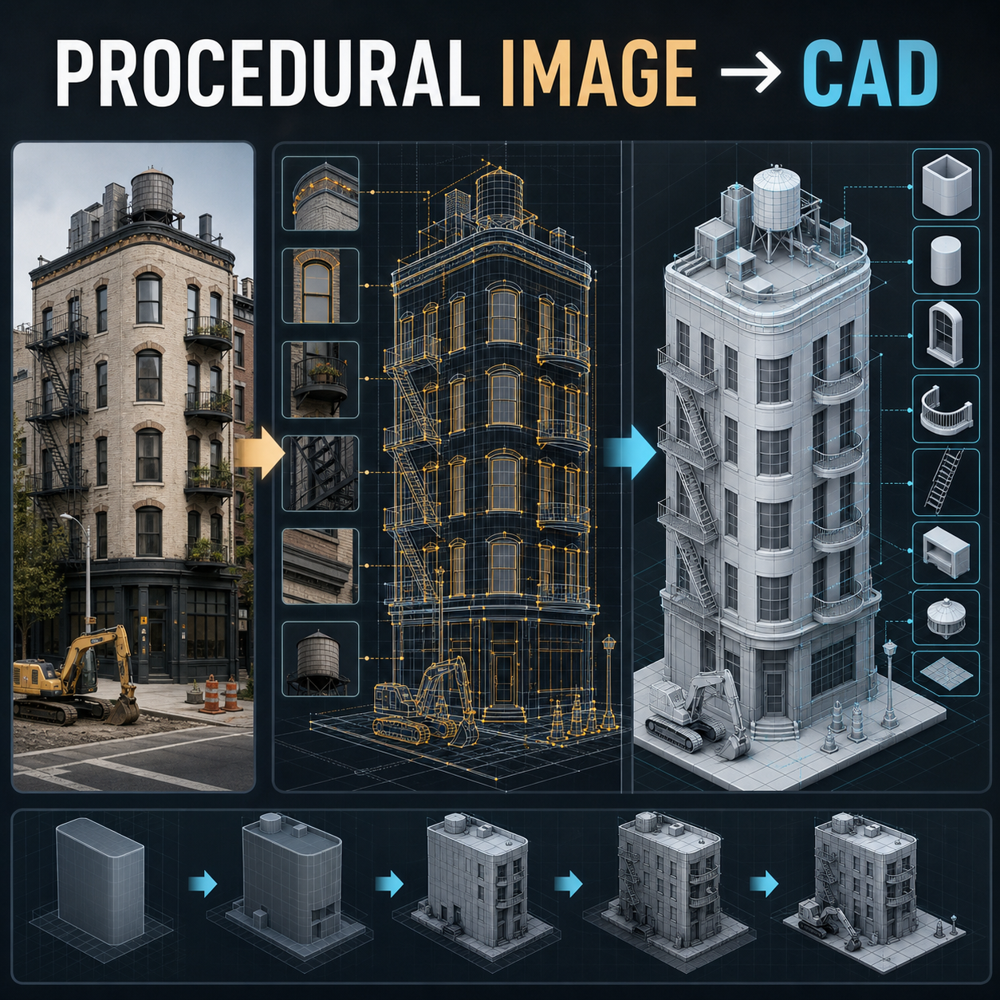

做什么
根据照片证据分解结构，用原语、拉伸和布尔编写模块化模型，反复渲染对比，直到轮廓、相机、构件数量和身份特征通过质量门，再导出 STL/GLB 并审计。
Agent skill · local preview
这不是网页应用，而是一套「一张参考图 → 可编辑程序化 CAD」的 Agent 技能包：用几何体建模，而不是生成网格。下面是本地内容预览。

根据照片证据分解结构，用原语、拉伸和布尔编写模块化模型，反复渲染对比，直到轮廓、相机、构件数量和身份特征通过质量门，再导出 STL/GLB 并审计。
不用 image-to-mesh、NeRF、Gaussian splat、摄影测量或把像素当几何。粗模只作为内部迭代，不能当作最终交付。
把本仓库当作 Cursor / Codex / Claude Code skill 安装，或用 scripts/bootstrap.sh 安装本地 CAD 工具链后，对参考图发起一次完整重建。
七国标志性坦克（M1A2、豹 2A7、99A、T-90M、挑战者 2、勒克莱尔、虎 I）的可交互三维蓝图： 全部构件由参数化几何体现场生成，隐藏线渲染。左侧列表切换车辆，360° 环绕，分解视图与外壳透视 可以看内部结构——人工装填、转盘自动装弹与尾舱自动装弹三种方案可直接对照。需要用静态服务器打开。
procedural-image-to-model/ SKILL.md Agent 主指令 demo/tank-atlas/ 七国坦克程序化蓝图合集 agents/openai.yaml 显示名与默认提示 assets/cover.png 封面流程图 assets/templates/ 证据与就绪文档模板 references/ 工作流、保真度、部署约定 scripts/bootstrap.sh macOS/Linux 引导 scripts/bootstrap.ps1 Windows 引导 scripts/readiness_gate.py 交付完整性门禁
原图入库，列出全部可见构件与不确定项。
锁定体量、地面接触与参考相机。
开洞、重复体系与可识别结构。
上下文物体、次要构件、隐藏面与导出审计。
| 门 | 比较什么 |
|---|---|
| G1 轮廓 | 外轮廓、转角、屋脊、接地 |
| G2 相机 | 可见面比例、透视、裁切 |
| G3 主体 | 体块划分、退台、屋顶集群 |
| G4 节奏 | 层数、窗、阳台、楼梯等计数 |
| G5 身份 | 让对象可被认出的特征 |
| G6–G7 | 次要细节与材质呈现 |
chmod +x scripts/bootstrap.sh ./scripts/bootstrap.sh --target ./procedural-cad --skip-run
当前仓库只包含技能与脚本，没有现成的主场景源文件，因此引导脚本需要 --skip-run，或先提供完整 CAD 工程后再跑 live 预览。